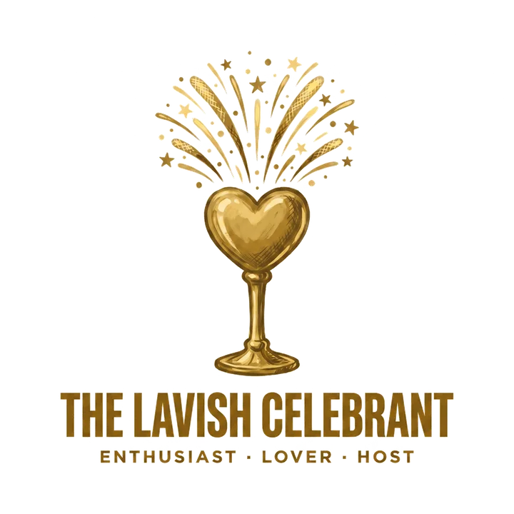

The Chord Beneath the Name

To create beautiful, generous experiences in which people feel cherished, connected, and joyfully welcomed into belonging.
The Lavish Celebrant makes love experiential. The Lover attends to who needs to feel treasured. The Host provides an abundant environment. The Enthusiast draws people into shared delight and connection.
Their gift is not merely event production. It is the creation of meaningful communal experiences that communicate worth.
1 How · 2 Who
They notice
They understand celebration as a language of belonging
“This person or moment should not pass without being honored. Let us create an experience that says, ‘You matter, and we are glad you are here.’”
They
Their characteristic movement is
Cherish → Provide → Celebrate
Who needs to feel personally valued?
What can we provide to embody welcome?
How can we create shared joy and connection?
Together
“What beautiful and generous experience will help people know that they are cherished and belong?”
Compassion becomes material and environmental. The Host creates a setting that communicates the Lover’s desire to honor people.
Resources become shared celebration rather than private possession.
Joy remains attentive to the emotional experience of particular people. The Celebrant notices who is not yet participating or feels unsafe.
Each gift also regulates the others
Embodied Belonging
They often excel in
Creating joy for others without needing their joy to validate you
Their ability to create meaningful experiences can become emotionally entangled with how visibly others respond.
Their central developmental question is
Can I offer celebration freely without needing the room’s delight to prove my worth or the event’s success?
At their best
“This moment and these people are worth celebrating. Let us create something beautiful that makes love tangible.”
Under strain
“If everyone is not delighted, included, and appreciative, I have failed.”
Low attendance, muted enthusiasm, criticism, exclusion, relational tension, budget limitations, or someone remaining unhappy.
“The experience is failing, and people may not feel loved—or may not love me.”
They add more, spend more, work harder, and attempt to regulate the room’s emotional atmosphere.
Guests may feel appreciated but also responsible for affirming the host and sustaining the expected mood.
The Lavish Celebrant should
Others experience
Others experience
They lead especially well where communities need
More energetic and socially expressive. They focus on shared delight and connection but may over-rely on visible enthusiasm.
More materially generous and aesthetically attentive. They create well-provisioned experiences but may over-manage details and access.
More personally attentive and inclusive. They focus on ensuring that each person feels cherished but may become emotionally over-responsible.
The father in Jesus’ parable of the lost son embodied extravagant welcome, public restoration, and celebratory belonging.
“Let’s have a feast and celebrate. For this son of mine was dead and is alive again.” — Luke 15:23–24
To awaken people to suffering, imagine a more humane possibility, and rally a community toward courageous, compassionate transformation.
20To surround people with holistic care through practical help, uplifting encouragement, and deeply empathetic presence.
21To create a safe and hopeful relationship in which emotional experience is deeply understood, wise insight becomes accessible, and people discover their own path toward growth.
23To guide people toward a shared purpose by creating a culture of encouragement, emotional safety, and clear developmental direction.
Take the assessment to measure all seven gifts and confirm your soul's chord.
Take the Assessment